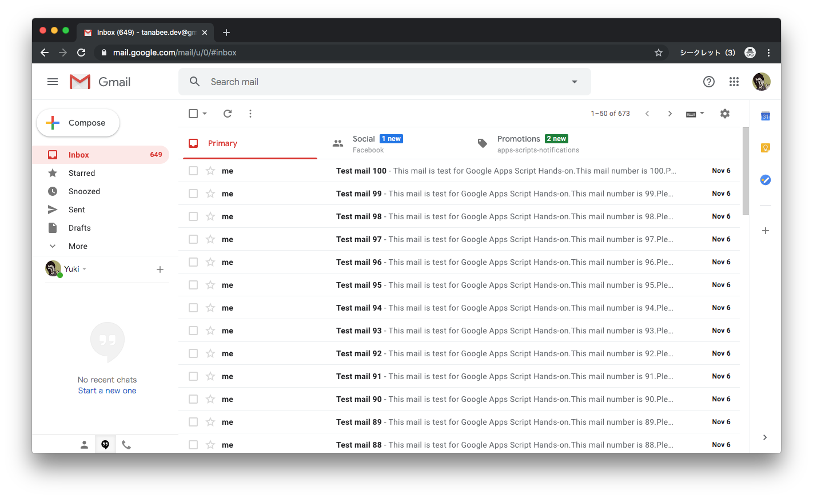
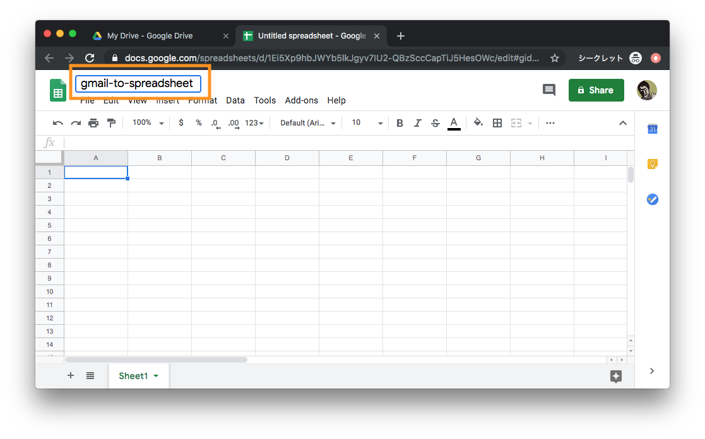
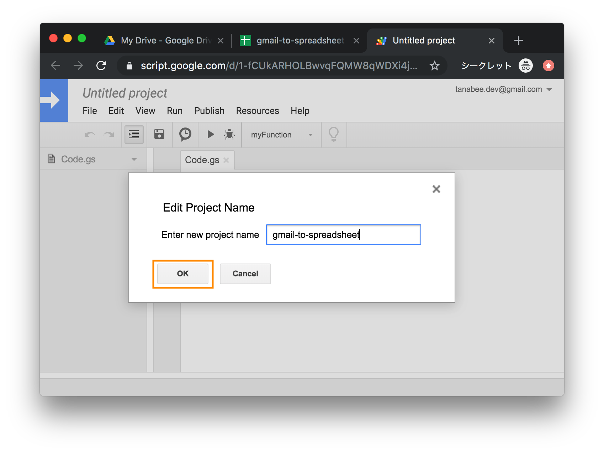
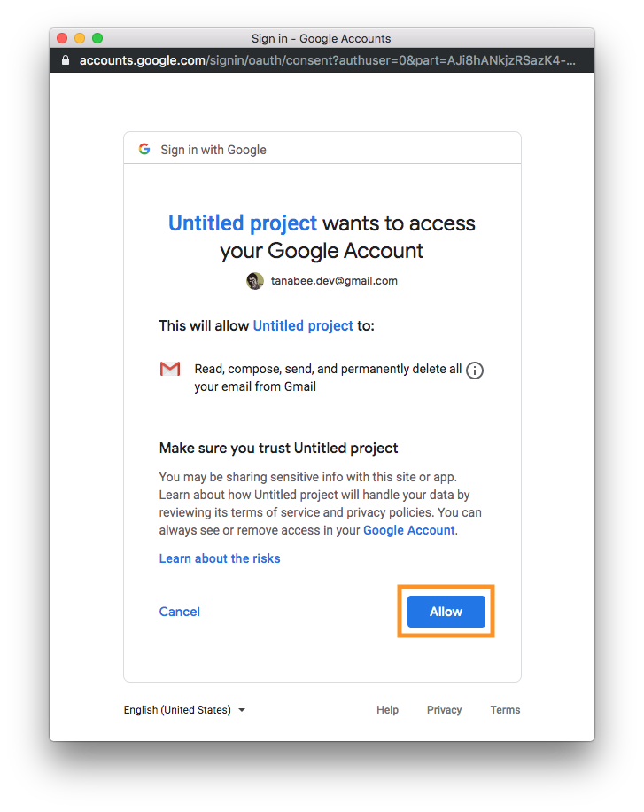
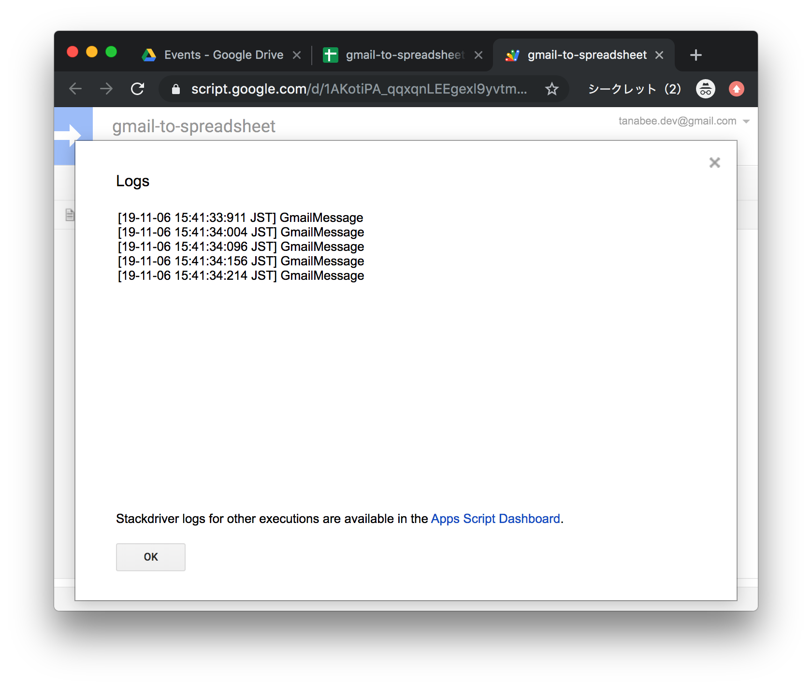
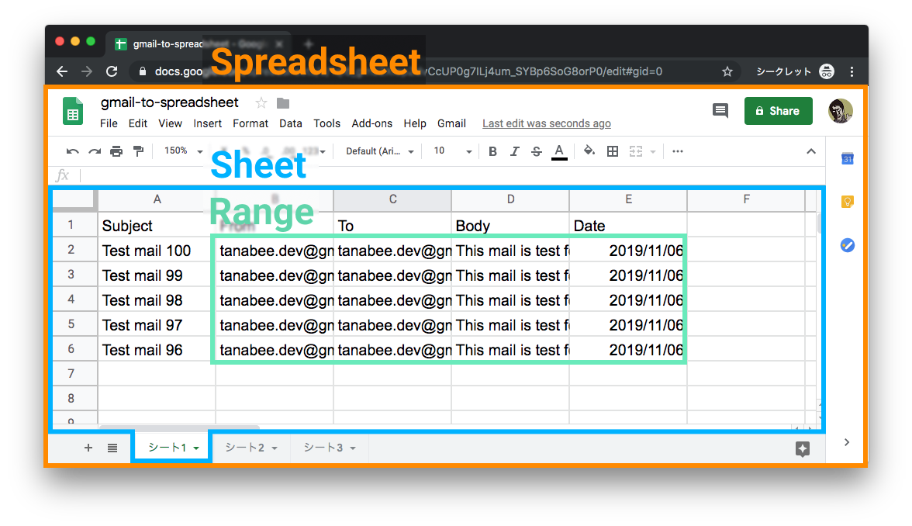
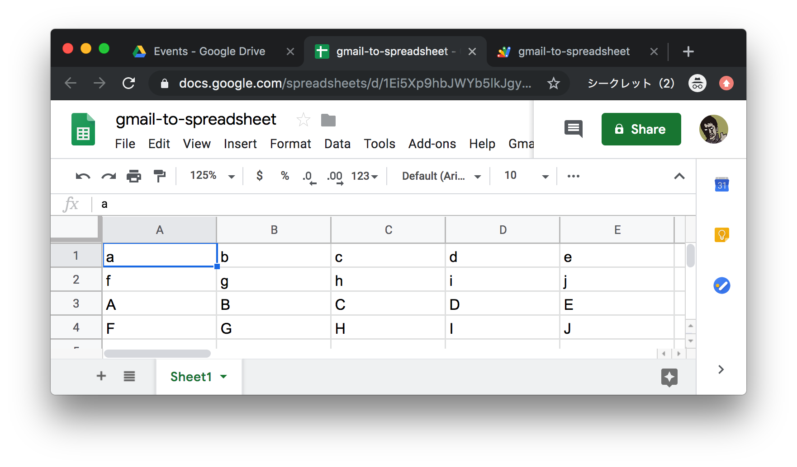
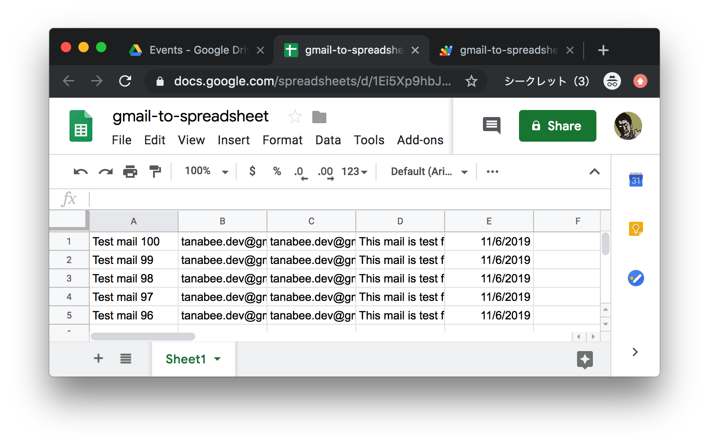

In this codelab, you can make a application that exports Gmail messages to Google Spreadsheet using Google Apps Script.
Source Code
You can get complete source code at tanabee/gas-codelab in GitHub.
Target
- Beginner of Apps Script
- Experts of JavaScript
Use case
- Analysis of the user inquiries about specific websites sent to specific mailing list or email addresses
- Integrate Google Apps with a system that doesn't provide REST API and provides email notifications
You need own Gmail or G Suite account. Please create Gmail account if you don't have.
1. Open mail-to-me application
Open the application in your browser.
mail-to-me
2. Make a copy
Select File > Make a Copy.
3. Run mail-to-me
Select Run button. You need to allow this project to access Gmail resources.
4. Confirm your Gmail

Open Gmail in your browser and confirm to receive emails. It's completed preparation.
Let's create a Apps Script project. First, visit drive.google.com and create a Spreadsheet file.

Click New

Click Google Sheets and Spreadsheet file will be created.

Click file name area, and input file name. (e.g. gmail-to-spreadsheet)

Select Tools > Script editor menu, and Google Apps Script project will be created.

Click project name area, and input project name. (e.g. gmail-to-spreadsheet)

After inputting project name, Click OK and it will be saved. Then a toast appears. The project will complete to be saved when the toast disappears.
Now, we can run the script! We will run the script in the next section.
Copy the script below and paste to the Script editor, and click Run button.
function main() {
Logger.log('Hello Google Apps Script!');
}

Logger.log() is logging function in Google Apps Script.

You can view logs when you select View > Logs in the menu.

We can find the text Hello Google Apps Script! in Log Viewer.
We can also use console.log(), but we use Logger.log() in this Hands-on because you need an additional process to use console.log().
Next, see the GmailApp class. Confirm GmailApp classes and methods in official reference. See GmailApp document. You can see the classes (e.g. GmailMessage, GmailThread ) and the methods (e.g. search, sendEmail) related to Gmail.

We use search method for retrieving emails in this time.
Let's implement the script. Use GmailApp.search method and retrieve Gmail threads.
function main() {
var searchText = '';// You can set value.
var threads = GmailApp.search(searchText, 0, 5);
Logger.log(threads);
}
If you would like to apply search filters, you can assign value to searchText. You can confirm search operators here.
Click Run button.

Then an authorization popup will be shown. You need to allow this project to access Gmail resources. Click Review Permissions.

Choose an account that you are using in this codelab.


To verify this app, click Advanced and click the bottom link Go to .... If it doesn't be displayed, skip this step.

Then the scope you need to allow is displayed. Click Allow button. It will go back to Script editor and run the script.

See the logs. Then you can see Array of GmailThread. You succeeded to retrieve emails and output the logs for only 5 lines of code! Because of this popup authorization flow, you don't need to implement authorization codes and you can make it easier than ever.
In the previous section, we could retrieve Gmail threads. We'd like to retrieve the message subject, body, from, to, and date in this time. So, we need to get messages from GmailThread.

Visit Apps Script reference. GmailThread class has getMessages() method and it returns Array of GmailMessage. Click GmailMessagge link and see the methods.

it has getSubject, getBody, getFrom, getTo, getDate and many retrieving methods. We can get message values from result of GmailThread.getMessages().
In this time, we use the first message of the threads. Retrieve message and show logs.
function main() {
var searchText = '';
var threads = GmailApp.search(searchText, 0, 5);
threads.forEach(function (thread) {
var message = thread.getMessages()[0];
Logger.log(message);
});
}

You can see the text GmailMessage in log viewer.
Finaly, get values to call methods.
function main() {
var searchText = '';
var threads = GmailApp.search(searchText, 0, 5);
threads.forEach(function (thread) {
var message = thread.getMessages()[0];
Logger.log(message.getSubject());
Logger.log(message.getFrom());
Logger.log(message.getTo());
Logger.log(message.getPlainBody());
Logger.log(message.getDate());
});
}

Run the script and See the logs. You succeeded to retrieve Gmail message values! From Next section, we will insert these values to Spreadsheet.
Next, let's understand SpreadsheetApp class. Visit SpreadsheetApp reference and see getActiveSheet method section. You can access the Spreadsheet you created to use this method.

SpreadsheetApp has hierarchical structured classes. ( Spreadsheet > Sheet > Range )
Run this method below. You need to allow the authorization just like in Gmail.
function saveMessages() {
Logger.log(SpreadsheetApp.getActiveSheet().getName());
}

Change the function to be executed to select above.


You can see the Spreadsheet tab name in the log viewer. You need to access Range class to insert data into the sheet. Use Range.setValues() to insert messages.
Implement as below and run saveMessages function.
function saveMessages() {
var data = [
['a', 'b', 'c'],
['d', 'e', 'f'],
];
SpreadsheetApp
.getActiveSheet()
.getRange("A1:C2")
.setValues(data);
}

See the Spreadsheet. Then, You can see the values inserted into the sheet. Note that the argument must be a two-dimensional array.
Then, update this function to set data as argument of this method. We'd like to insert 5 types of values, so we set the last column to "E".
function saveMessages(data) {
SpreadsheetApp
.getActiveSheet()
.getRange("A1:E" + data.length)
.setValues(data);
}
Add test function and Run it.
function test() {
var data = [
['a', 'b', 'c', 'd', 'e'],
['f', 'g', 'h', 'i', 'j'],
['A', 'B', 'C', 'D', 'E'],
['F', 'G', 'H', 'I', 'J'],
];
saveMessages(data);
}

Done! Now, you can delete test method. We will call saveMessages function from main function from the next section.
Update main function to call saveMessages function. Make messages variable and insert GmailMessage into messages as two-dimensional array. After threads.forEach we call saveMessages function.
function main() {
var searchText = '';
var threads = GmailApp.search(searchText, 0, 5);
var messages = [];
threads.forEach(function (thread) {
var message = thread.getMessages()[0];
// single cell characters limit
if (message.getPlainBody().length > 50000) {
return;
}
messages.push([
message.getSubject(),
message.getFrom(),
message.getTo(),
message.getPlainBody(),
message.getDate(),
]);
});
saveMessages(messages);
}
function saveMessages(data) {
SpreadsheetApp
.getActiveSheet()
.getRange("A1:E" + data.length)
.setValues(data);
}
Run main function and see the Spreadsheet.

You can see the messages data in the Spreadsheet! Although, it is better that the first row is filled with column names to understand these columns easier. Replace 4th row of the code as below and run the script.
var messages = [['Subject', 'From', 'To', 'Body', 'Date']];

We can understand the meaning of the eash column well. Now, we succeeded to make the application that can connect Gmail and Spreadsheet, and it is less than 30 lines of code.
The application we made works well, but we can make it more convenient. We will add custom menu on Spreadsheet. Add the onOpen function below and Run it. The name onOpen is reserved and will be called when the Spreadsheet is opened. You can confirm the details in the official document.
function onOpen() {
SpreadsheetApp
.getActiveSpreadsheet()
.addMenu('Gmail', [
{name: 'Fetch', functionName: 'main'},
]);
}

See the Spreadsheet. The custom menu will be displayed. Click Gmail > Fetch.
It's better that it can be operated to reset the sheet values. Add clearSheet function and add menu.
function onOpen() {
SpreadsheetApp
.getActiveSpreadsheet()
.addMenu('Gmail', [
{name: 'Fetch', functionName: 'main'},
{name: 'Clear sheet', functionName: 'clearSheet'},
]);
}
function clearSheet() {
SpreadsheetApp
.getActiveSheet()
.clear();
}

You can see Clear sheet sub menu and run it. The Spreadsheet data will be cleared.
You can also configure automation to this project using Trigger. Let's try setting Time-driven trigger to run the main function once a minute.
Follow below.

Select Edit > Current project's trigger

Select Add Trigger

Then it will be displayed the popup of trigger settings. Select as screenshot above and Click Save.

Then the trigger is created. Click the three dots icon.

Select Executions.

You can see that main function is executed once a minute. If you receive new Gmail messages, the spreadsheet can be refreshed as the latest status.

You can delete trigger to select the three dots icon and Delete trigger.

Google Apps Script has many types of triggers. You can improve the projects more convenient to use triggers.
Congrats! You finished this codelab. You can see the final project code below. You can also get code at tanabee/gas-codelab in GitHub.
function onOpen() {
SpreadsheetApp
.getActiveSpreadsheet()
.addMenu('Gmail', [
{name: 'Fetch', functionName: 'main'},
{name: 'Clear sheet', functionName: 'clearSheet'},
]);
}
function main() {
var searchText = '';
var threads = GmailApp.search(searchText, 0, 500);
var messages = [['Subject', 'From', 'To', 'Body', 'Date']];
threads.forEach(function (thread) {
var message = thread.getMessages()[0];
// single cell characters limit
if (message.getPlainBody().length > 50000) {
return;
}
messages.push([
message.getSubject(),
message.getFrom(),
message.getTo(),
message.getPlainBody(),
message.getDate(),
]);
});
saveMessages(messages);
}
function saveMessages(data) {
clearSheet();
SpreadsheetApp
.getActiveSheet()
.getRange("A1:E" + data.length)
.setValues(data);
}
function clearSheet() {
SpreadsheetApp
.getActiveSheet()
.clear();
}
Next Action
You can improve this project. I'll show you some examples.
- Retrieve Over 500 Gmail threads (Using for statement)
- Not overwrite but add the messages to Spreadsheet (Need to consider duplicate data)
- Parse specific formatted message body and save the elements
- Visualize the data using Data Studio